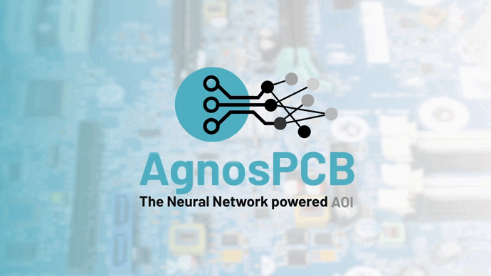

AgnosPCB Documentation¶
Affordable Automated Optical Inspection (AOI) powered by Neural Network technology. Everything you need to unbox, set up and master your inspection system is here.
Neural inspection
Defects are detected by comparing each board against a trained REFERENCE.
Fast setup
From unboxing to your first inspection without programming a single test.
Traceable reports
Every inspection generates a report you can archive, share and audit.
Extra tools
Barcode reading, UV coating inspection, measurement and more.
Where do you want to start?¶
-
Getting started
Unbox your machine, check what came in the box and connect everything for the first time.
- Package content — what you should have received
- Unboxing guide — step-by-step assembly
- Connection guide — cables, power and camera
-
How to use the software
Learn the interface and run inspections, from the basics to the advanced options.
- Terminology — REFERENCE, UUI, inference, false positive…
- User interface — screen layout and working areas
- Inspection workflow — the complete procedure
- Settings menu — interface, workflow and report options
-
Support and maintenance
Keep the system in shape and solve issues when something does not behave as expected.
- Maintenance — belts, cleaning and lubrication
- Update software — keep your AOI computer current
- Network configuration — network interface setup
- Troubleshooting — common problems and fixes
-
Additional information
Quick answers and practical advice gathered from real users.
Your first inspection in four steps¶
- Set the machine up. Follow the unboxing and connection guide to assemble and power the system.
- Learn the vocabulary. A quick read of the terminology page makes every other guide easier to follow.
- Create a REFERENCE. Capture a known-good board — see Tips for how to get a clean one, or convert an inspected board with UUI to REFERENCE.
- Inspect and report. Run the inspection workflow and generate your report.
Not getting the results you expect?
Most detection issues come down to two settings: the sensitivity and the exclusion areas of your REFERENCE.
Tools and features¶
-
Load a REFERENCE automatically by scanning the board barcode.
-
Ignore regions that legitimately change from board to board.
-
Balance defect detection against false positives.
-
Promote an inspected board to become the new REFERENCE.
-
Crosses, auto process and error mask color controls.
-
Inspect conformal coating under UV illumination.
-
Accept several valid versions of the same board.
-
Measure distances directly on the captured image.
-
Align REFERENCE and UUI by hand when needed.
Need a hand?¶
-
Contact support
Our team answers technical questions and helps with hardware issues.
-
Visit our website
Product information, pricing and news about the AgnosPCB AOI system.